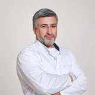
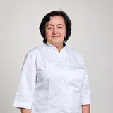
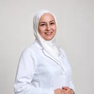

Абдурахманов Абдулкарим Гаджиахмедович
Аллерголог, гомеопат, семейный врач
Аллергология и иммунология
Выясняем, на что именно реагирует организм, и подбираем лечение с учётом причины, а не только симптомов. Принимаем взрослых и детей.
Первичный приёмуточняется
Длительностьуточняется
Ведут приём



3 врача